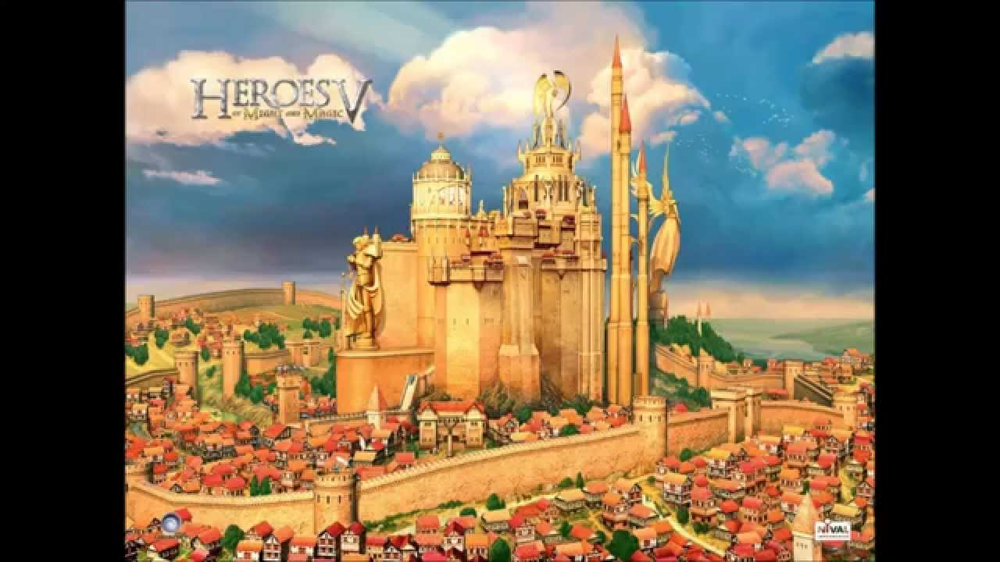
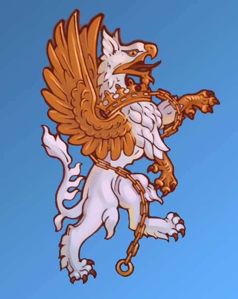

Miasto Przystań
Motto: "Za honor, ład i obowiązek!"



Charakterystyka:
- Społeczeństwo: Ludzie
- Przypisane kolory: błękitny, biały i złoty
- Bóstwa: Elrath – Smok Światłości i jego słudzy Aniołowie
- Filozofia: Prawo i porządek zamiast dobra i litości
- Królestwo: Imperium Świętego Gryfa
- Stolica: Talonguard
- Symbole: Święte Słońce, Gryf
Opis:
Imperium Świętego Gryfa jest najsilniejszą frakcją w świecie Ashan. To królestwo średniowiecznych rycerzy i mnichów mających dostęp do Magii Światłości. Imperium wybrało na swój symbol Gryfa. Te oswojone stworzenia powszechnie używane są jako wierzchowce lub jednostki szybkiego zwiadu. Na polu bitwy jednostki zamku Haven znane są z niezwykłej wytrzymałości i polegają raczej na brutalnej sile niż delikatnej sztuce magii. Bohaterowie będą doskonalić swe umiejętności, by żelazna pięść Imperium Świętego Gryfa skuteczniej miażdżyła wrogów.
(RSS - Rok Siódmego Smoka)
Starożytność
3 RSS: Narodziny Imperium Sokoła
Sokół Wielki zjednoczył wszystkich ludzi z różnych mniejszych i większych królestw. Przepowiednia mówi, że Sokół będzie istniał tak długo jak istnieje świat.
28 – 40 RSS: Wojny Ognia – Pierwszy Wielki Najazd Demonów
Większość Aniołów zginęła podczas tej wyczerpującej wojny. Ocalone Anioły znalazły schronienie w Imperium Sokoła. Imperium coraz bardziej odwracało się od Smoka Powietrza – Sylatha i zaczynało oddawać cześć Smokowi Światłości.
48 RSS: Imperium Sokoła staje się Świętym Imperium Sokoła. Założenie Wolnych Miast na wschodzie.
Imperator Brian Sokół udziela władzy absolutnej Kościołowi Smoka Światłości. Królestwo Ludzi przybiera nową nazwę „Święte Imperium Sokoła”. Jednak wielu mieszkańców Imperium nie chciało się odwrócić od wiary w Smoka Powietrza – Sylatha, opuścili oni Imperium i założyli na dalekim wchodzie Wolne Miasta.
Nowożytność
843 RSS: Czwarte Zaćmienie – Ostatni Lot Sokoła
Demony przypuszczają szturm na stolicę Święte Imperium Sokoła i masakrują rodzinę królewską. Jak tylko Demony zostały wypędzone, wiele szlacheckich domów zaczęło rościć sobie prawa do królewskiego tronu. Ivan Gryf na końcu krwawej drogi zdobywa koronę. Święte Imperium Sokoła staje się Imperium Świętego Gryfa.
951 RSS: Piąte Zaćmienie – Wojna Szarego Przymierza
Armie Demonów ścierają się z Rycerzami Haven sprzymierzonymi z innymi frakcjami. Imperator Alexei spycha Demony z powrotem w otchłań piekielnego więzienia, jednak podczas ostatniego ataku ginie. Jego dusza zostaje uratowana przez tajemniczego i legendarnego rycerza znanego jako Tieru. Tieru wiąże duszę Alexeia z artefaktem znanym jako Serce Gryfa. Syn Alexeia – Nicolai w wieku sześciu lat obejmuje tron
969 RSS: Szóste Zaćmienie – Wojny Królowej Isabeli
Niezapowiadane Zaćmienie paraliżuje całe Imperium i wzbudza panikę wśród ludności. Demony szybko się mobilizują i w przerażającej sile maszerują ku stolicy Haven. Wojna ta będzie osią wszystkich kampanii w Heroes V.